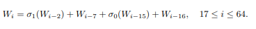
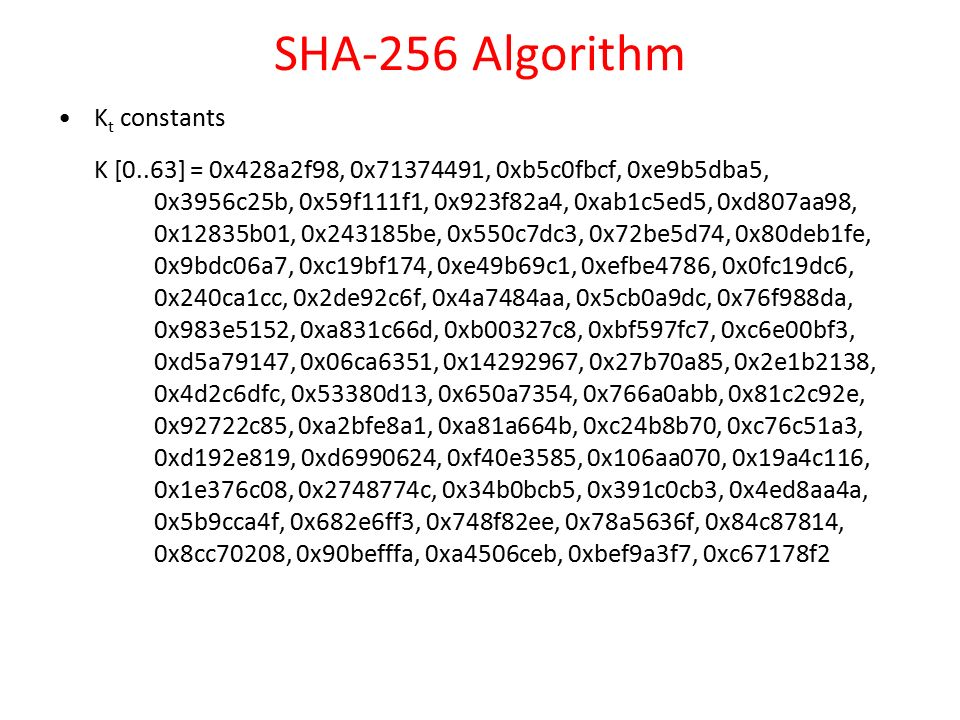

HASHING
Introduction
A cryptographic hashing function takes data of arbituray length
as input and produces an output of a fixed length known as a message digest or hash value.
Bitcoin utilzes a specific flavor of cryptographic hashing function known as the SHA-256.
SHA-256
The SHA-256 is considered a one way hashing function. The ouput that is produced can not be used to reverse the algorithm and aquire the input. This concept of SHA-256 being a one way function aids in the security of bitcoin transactions.
The SHA-256 belongs to a family of hashing functions known as the SHA-2 family. There are mutiple other hashing functions under the SHA2 family(i.e SHA-224, SHA-512, SHA-384). The numeric suffix of each of these algorithms dictates the bit length of the hash value that is outputed, and each differs slightly in the way the hash value is create, however the basis of structure in the algorithms remains very much identical.
Algorithmic Process
In order to output a hash value the input is put through several steps to reach said output.
Step 1: Padding.
Step 2: break input into block sizes of 512 bits.
Step 3: Initialize registers.
Step 4: Apply compression function.
Padding
Because the data recieved as input may not equal to a multiple of 512 bits for block creation, padding is used to fill the gab of missing bits so the total bits will be a mutiple of 512. This also helps secure the blocks from data manipulation.
padding appends a bit '1' to the end of the input then x amount of zero bits, and is done so the length of bits equal 448 mod 512. This process is always performed even when input length is already 448 mod 512. A 64 bit representation of the length of the input is also appended making the length a multiple of 512.
Breaking
The input is parsed into fixed blocks of 512 bits. each one of these blocks containing 64 words of 32 bits length. . The first sixteen words are made of the 32 bits each from the 512 bit message. The other 48 are obtained computing the algorithm shown below. where W is a word in the block and i is the specific word in the block.
Image of scheduling function to populate the black researchgate.net
Initialze Registers
Eight registers are utilized a,b,c,d,e,f,g,h for storing initial hash values given by the first 32 bits of the fractional part of the aqure root of the first 8 prime numbers. These values are shown below.

Image of initial hashing values from meduim.com
Apply compression function
The compression function utilizes the 8 initial hashing values and the 64 constant values shown below as input.
Image of the 64 constants slideplayer.com
This function is performed on every single block 64 times. The function utilizes both the intial hash values and constants to solve for a new hash value. The 8 intitial hash values are then added to the new hash value. The sum of the intial hash values and the new hash value is the hash value of that block and is added to the next block where steps 3 and 4 are repeated.